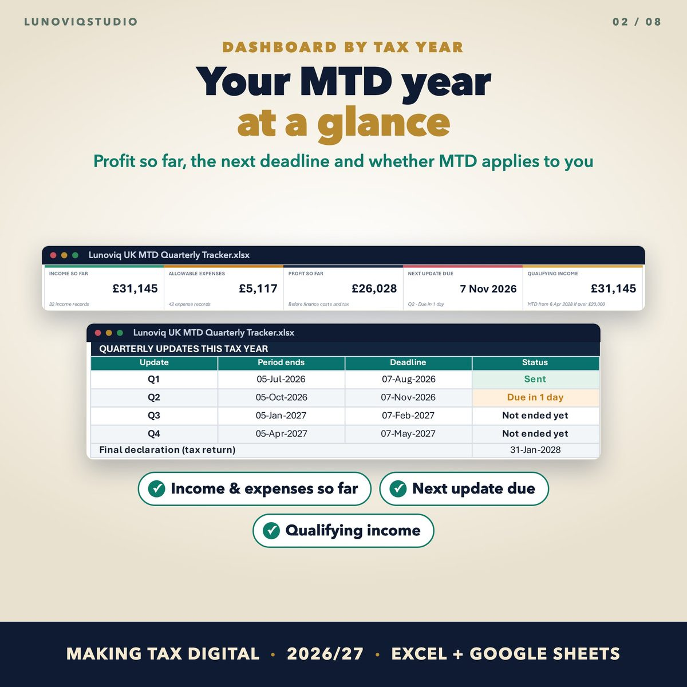
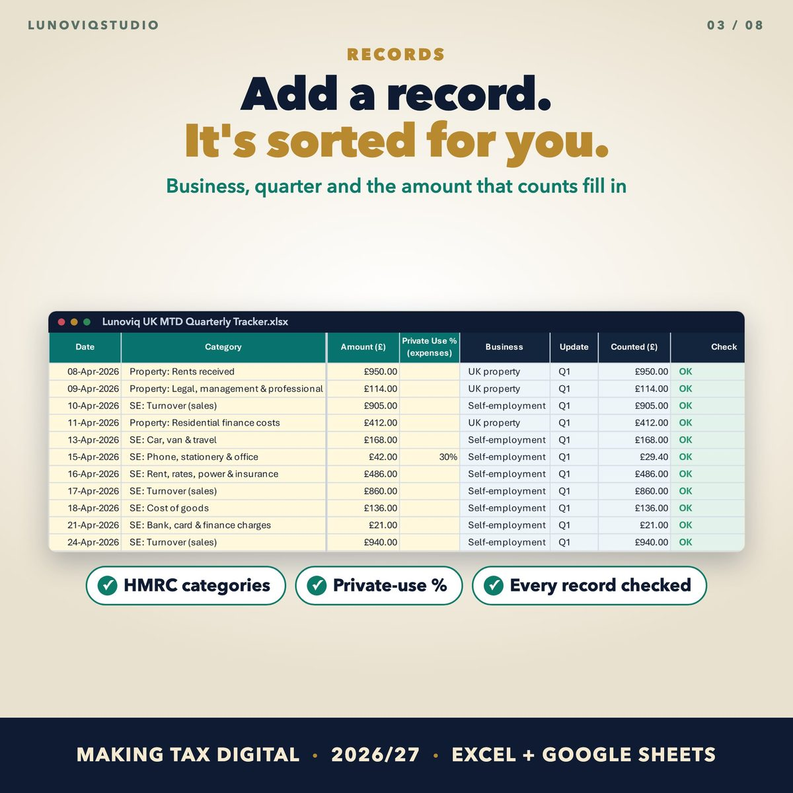
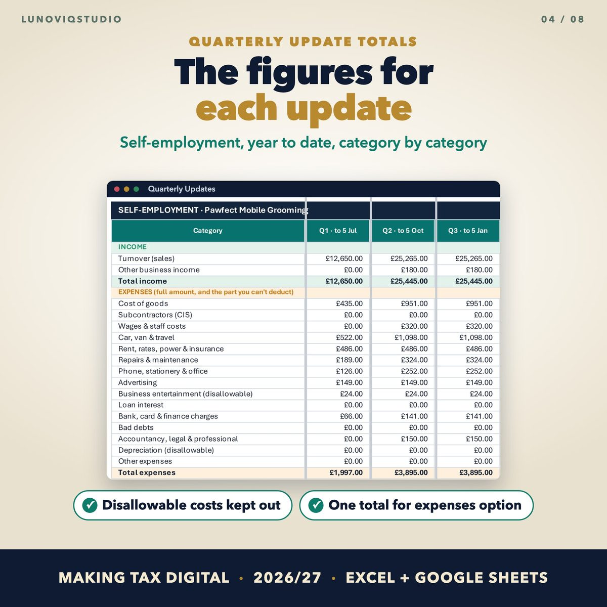
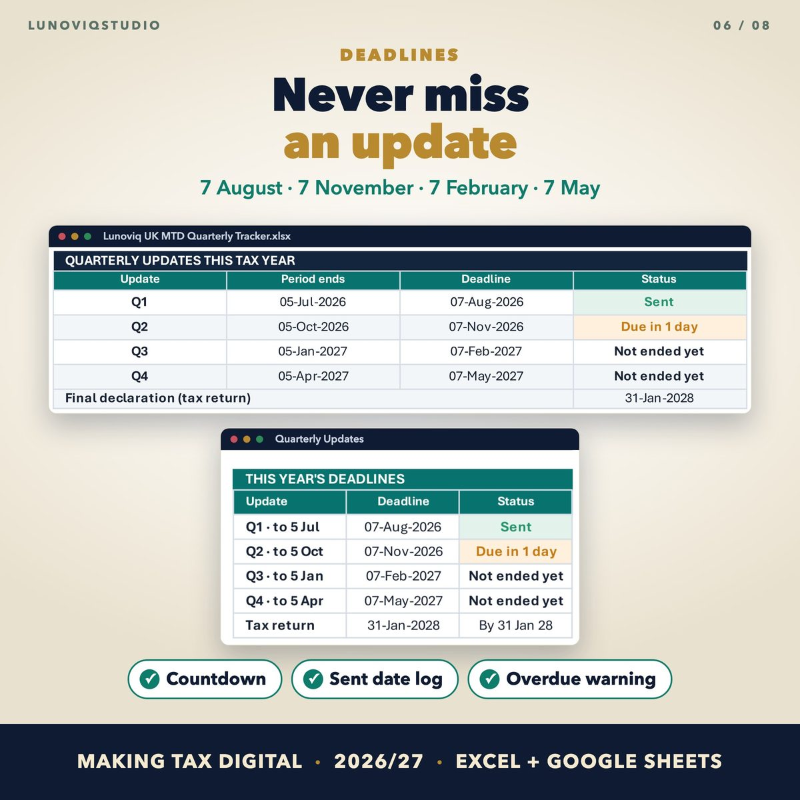

Home › Spreadsheets › UK Making Tax Digital Quarterly Tracker
UK Making Tax Digital Quarterly Tracker
Keep your Making Tax Digital records in one spreadsheet: every sale, rent payment and bill sorted into HMRC's categories, with the totals for each quarterly update.
Made for: UK sole traders and landlords using Making Tax Digital for Income Tax, or getting ready for it.
Get it on EtsyWhat it doesWhat it does
HMRC categories
Every record is sorted into the headings for self-employment and UK property.
Quarterly update totals
Year-to-date figures for each update, category by category.
Deadline countdown
7 August, 7 November, 7 February and 7 May, with a log of when you sent each update.
Do I need MTD?
Your qualifying income and the date MTD would start for you (£50,000, £30,000 and £20,000).
See it




What you get
- Blank Excel workbook (up to 3,000 records)
- Sample workbook
- Google Sheets version (copy link in the PDF)
Instant download. One-off price, no subscription, no macros.
Questions
Does it send my updates to HMRC?
No. It keeps your records and works out the figures. You send them with MTD-compatible bridging software or through your accountant.